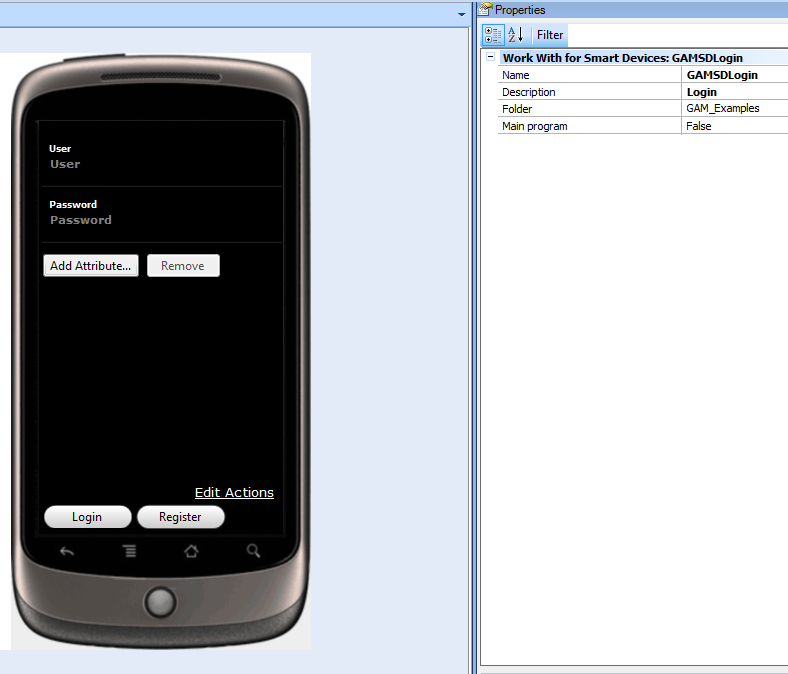
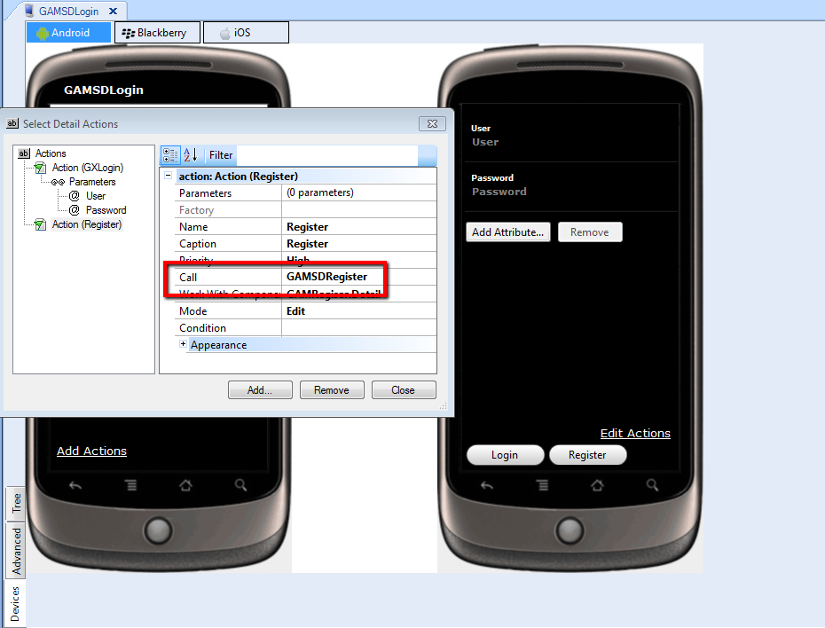

GAMSDLogin object is an entry panel for smart devices applications, which is incorporated automatically to the KB when Enable Integrated Security Property is set to yes. This object is the login default panel, and is called at application startup.  The associated action to the "Register" button is as call action to GAMSDRegister object, as the image shows: 
|
| Backlinks |
| GAM Activation Process |
| HowTo: Defining Panels in Smart Devices |